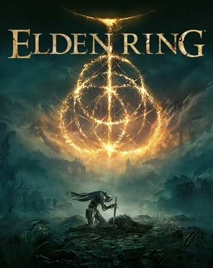

Elden Ring
About Elden Ring
Elden Ring is an action role-playing game developed by FromSoftware and published by Bandai Namco Entertainment. The game was directed by Hidetaka Miyazaki and made in collaboration with fantasy novelist George R. R. Martin, who provided material for the game's setting. It was released for Microsoft Windows, PlayStation 4, PlayStation 5, Xbox One, and Xbox Series X/S on February 25, 2022. Elden Ring is presented through a third-person perspective, with players freely roaming its interactive open world. Gameplay elements include combat, featuring several types of weapons and magic spells, horseback riding, summons, and crafting. Elden Ring received critical acclaim, with praise for its open world gameplay, fantasy setting, and evolution of the Souls formula. The game sold 12 million copies worldwide within three weeks of its release.
About the Game
- Developer: FromSoftware
- Publishers: Bandai Namco Entertainment JP; FromSoftware
- Directors: Hidetaka Miyazaki; Yui Tanimura
- Producers: Yuzo Kojima
- Programmers: Takeshi Suzuki; Yuki Kido
- Writers: Hidetaka Miyazaki; George R. R. Martin
- Composers: Tsukasa Saitoh; Shoi Miyazawa; Tai Tomisawa; Yuka Kitamura; Yoshimi Kudo
- Platforms: Microsoft Windows; PlayStation 4; PlayStation 5; Xbox One; Xbox Series X/S
- Release: February 25, 2022
- Genre: Action role-playing
- Modes: Single-player, multiplayer
Awards and accolades
| Year | Award | Category | Result |
|---|---|---|---|
| 2020 | Golden Joystick Awards | Most Wanted Game | Nominated |
| 2020 | The Game Awards 2020 | Most Anticipated Game | Won |
| 2021 | Golden Joystick Awards | Most Wanted Game | Won |
| 2021 | The Game Awards 2021 | Most Anticipated Game | Won |